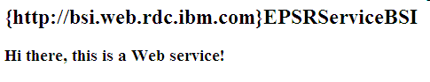
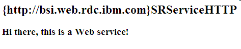
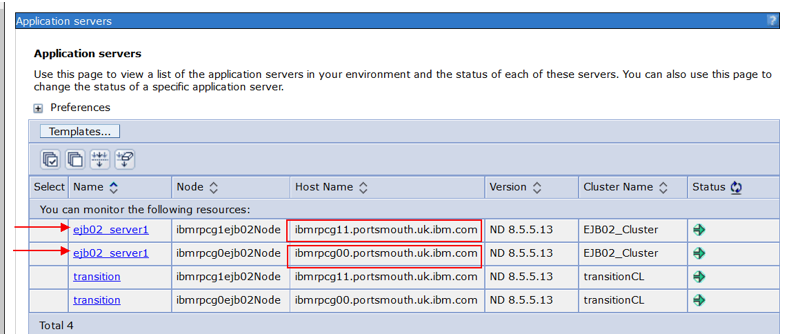
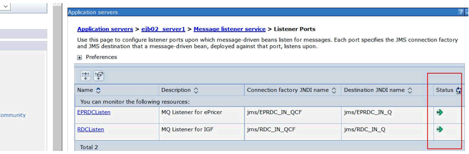
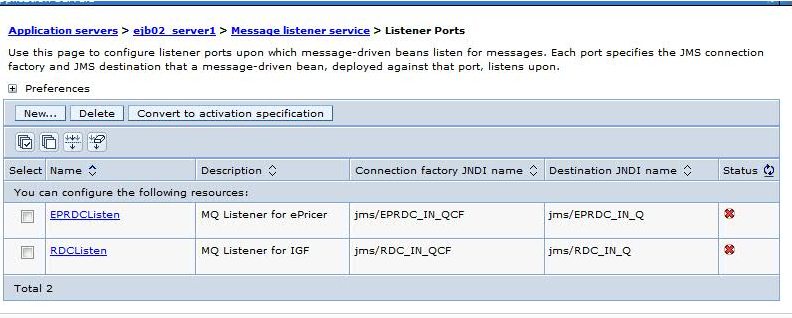

• Check Epricer in
https://ibmprdc1.portsmouth.uk.ibm.com/RDCServices/services/EPSRServiceBSI
https://ibmrpcg0.portsmouth.uk.ibm.com/RDCServices/services/EPSRServiceBSI
https://ibmrpcg0.portsmouth.uk.ibm.com:9446/RDCServices/services/EPSRServiceBSI
https://ibmrpcg00.portsmouth.uk.ibm.com:9446/RDCServices/services/EPSRServiceBSI

• Check IGF in
https://ibmprdc1.portsmouth.uk.ibm.com/SRServiceHTTPRouter/services/SRServiceBSI
https://ibmrpcg0.portsmouth.uk.ibm.com:9446/SRServiceHTTPRouter/services/SRServiceBSI
https://ibmprdc1.portsmouth.uk.ibm.com/SRServiceHTTPRouter/services/SRServiceHTTP
https://ibmrpcg11.portsmouth.uk.ibm.com:9446/SRServiceHTTPRouter/services/SRServiceHTTP

Login to g00 WAS console with ccm@us.ibm.com id (Password cust98newcust98new) :
(the password mentioned is iterated with extra numeric when changed, if you can't hit your brain, contact Sreekanth)
https://ibmrpcg00.portsmouth.uk.ibm.com:9043/ibm/console/secure/securelogon.do
Go to --->Servers--->Server Types---Websphere application servers---> then you need to check the ejb02_server1 status on both ibmrpcg00 & ibmrpcg11 servers (highlighted below)
click on ejb02_server --->Communications--->Messaging--->Message Listener Service----> Listener Ports---> there you can find the listener status. ***Make sure of performing the above step for both server ibmrpcg00 & ibmrpcg11 servers


If the listeners are not up, the screen shows like below and need to follow VCS callout procedure & ask them to fix the issue by restarting the listeners.
